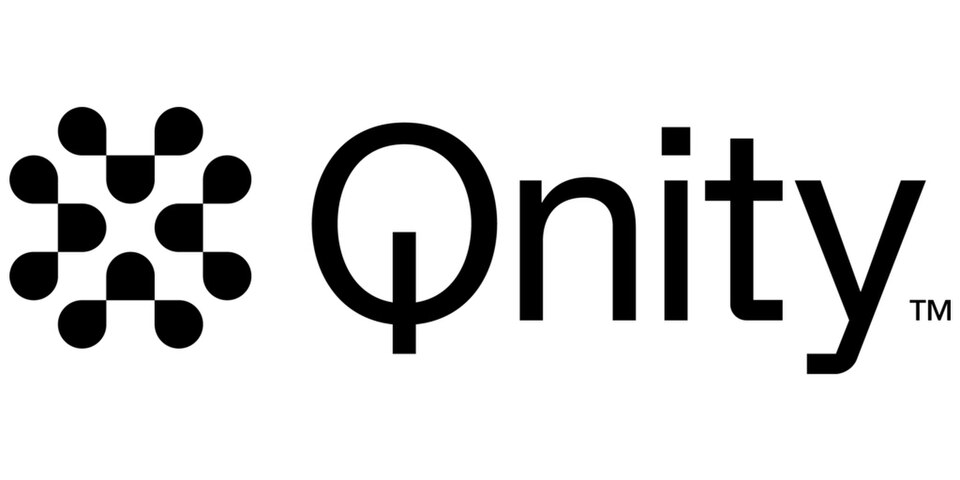

Qnity
Qnity는 반도체 제조와 전자 산업에 쓰이는 소재를 공급하는 기업이다. 반도체 공정 소재와 신호 무결성 관련 제품을 두 사업 부문에서 다룬다.
최종 업데이트

Qnity는 어떤 브랜드인가
이 회사는 반도체 제조사와 전자 산업 고객을 대상으로 공정·패키징·디스플레이용 소재를 공급한다. Semiconductor Technologies 부문은 2025년 매출의 56%를 차지하며 화학기계연마, 포토리소그래피, 밀봉 응용 분야와 OLED 디스플레이용 제품을 생산한다.
Interconnect Solutions 부문은 같은 해 매출의 44%를 차지하며 신호 무결성을 위한 소재를 제공한다. 고객에는 세계 20대 반도체 제조사 대부분이 포함된다.
2025년 기준 최대 고객은 매출의 11%를 차지한 Samsung Electronics와 8%를 차지한 TSMC이다.
Qnity는 어떻게 시작되고 성장했나
이 회사는 DuPont의 전자 사업 부문을 보유하기 위해 2024년 12월 설립됐다. DuPont은 2025년 11월 기업 분할을 완료했다.
Qnity라는 이름은 Lippincott가 전자기기의 전원 아이콘을 나타내는 문자 Q와 unity라는 단어를 포함하도록 만들었다. 사업 기반이 된 DuPont의 전자 분야 확장은 1987년에 진행됐으며, DuPont은 2021년 7월 Laird Performance Materials를 $2.3 billion에 인수했다.
Qnity의 브랜드 아이덴티티는 무엇인가
반도체 공정 소재와 신호 무결성 소재를 별도 사업 부문으로 구성하고, 세계 주요 반도체 제조사를 고객으로 둔다는 점이 구분점이다.
Qnity의 대표 제품과 서비스는 무엇인가
Semiconductor Technologies 부문은 화학기계연마와 포토리소그래피 공정에 사용되는 제품을 생산한다. 이 부문은 밀봉 응용 분야와 OLED 디스플레이에 필요한 제품도 다룬다.
Interconnect Solutions 부문은 반도체 코팅, 열·전자기 차폐, 라미네이트 소재 등 신호 무결성을 위한 제품을 공급한다. Kapton은 이 회사가 보유한 브랜드이다.
Qnity는 지금 어떤 상태인가
이 회사는 2025년 11월 DuPont에서 기업 분할을 완료한 독립 회사이다. 2026년 3월 Nvidia와 인공지능 및 고성능 컴퓨팅용 반도체·패키징 소재를 공동 연구개발하기로 했다.
같은 달 대만 먀오리현 주난의 Ennostar N9 공장을 인수하는 방식으로 $61.5 million을 투자한다고 발표했다.
Qnity 로고는 어떻게 변해왔나
자주 묻는 질문
Qnity는 언제 설립되었나요?
Qnity는 2025년 설립되었습니다.
Qnity는 어떤 산업의 브랜드인가요?
Qnity는 기술·전자 분야의 브랜드입니다.
Qnity의 브랜드 아이덴티티는 무엇인가요?
반도체 공정 소재와 신호 무결성 소재를 별도 사업 부문으로 구성하고, 세계 주요 반도체 제조사를 고객으로 둔다는 점이 구분점이다.
Qnity의 대표 제품은 무엇인가요?
Semiconductor Technologies 부문은 화학기계연마와 포토리소그래피 공정에 사용되는 제품을 생산한다.
Qnity는 현재 어떤 상태인가요?
이 회사는 2025년 11월 DuPont에서 기업 분할을 완료한 독립 회사이다.
Qnity의 본사는 어디에 있나요?
Qnity의 본사는 신주시에 있습니다(위키데이터 기준).
Qnity의 공식 웹사이트는 어디인가요?
Qnity의 공식 웹사이트는 https://www.qnityelectronics.com/ 입니다.
출처와 검증
Qnity 관련 참고: 공식 웹사이트 · 위키데이터 Q138685636 · 영어 위키백과. 브랜드명은 한글과 원어를 함께 표기하되 데이터에 없는 표기는 만들지 않습니다. 기원 국가·설립연도는 검수된 정의문에서 확인된 값을 우선하고, 없을 때만 공식 웹사이트 URL이 일치하는 위키데이터 개체의 값을 씁니다. 탄생일의 월·일은 위키데이터, 위키백과 정보상자, 본문 가운데 같은 연월로 확인되는 값만 싣고, 출처끼리 다르면 싣지 않습니다. 웹 첫 보관은 인터넷 아카이브가 공식 사이트 첫 화면을 처음 보관한 날로, 사이트 개설일과 다를 수 있습니다. 위키데이터 값은 2026-09-12 기준입니다.